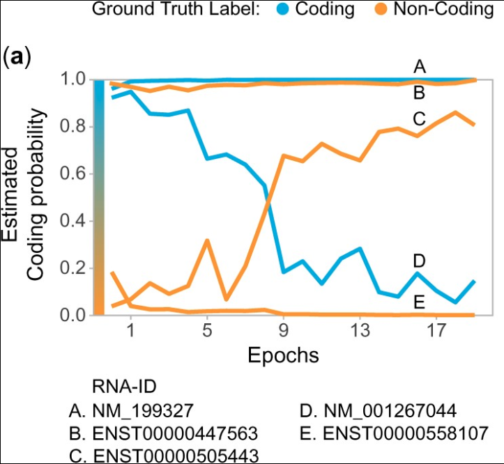
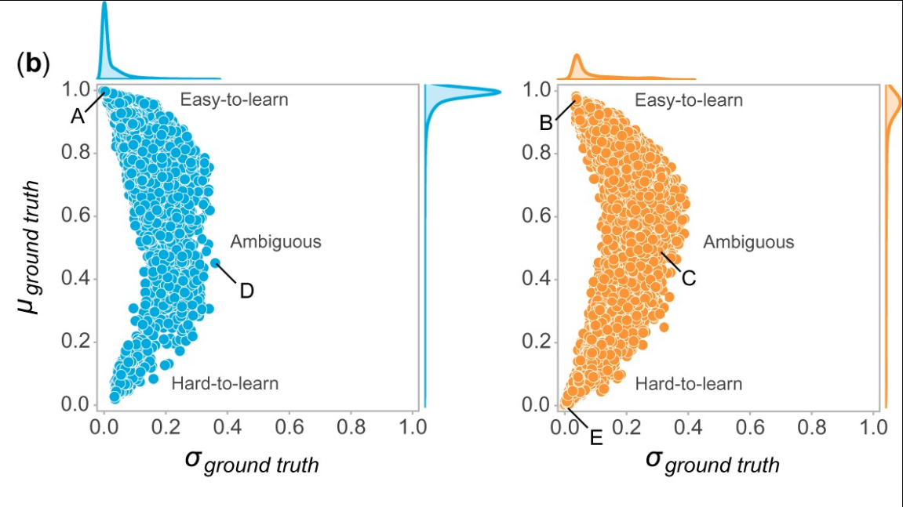
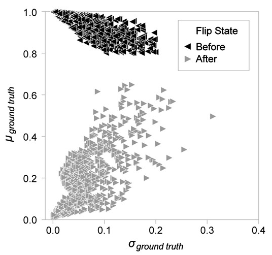
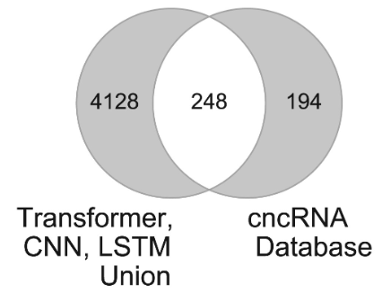
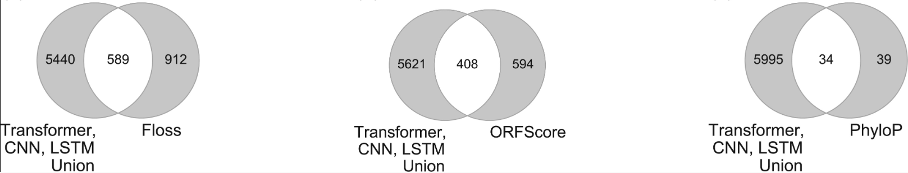
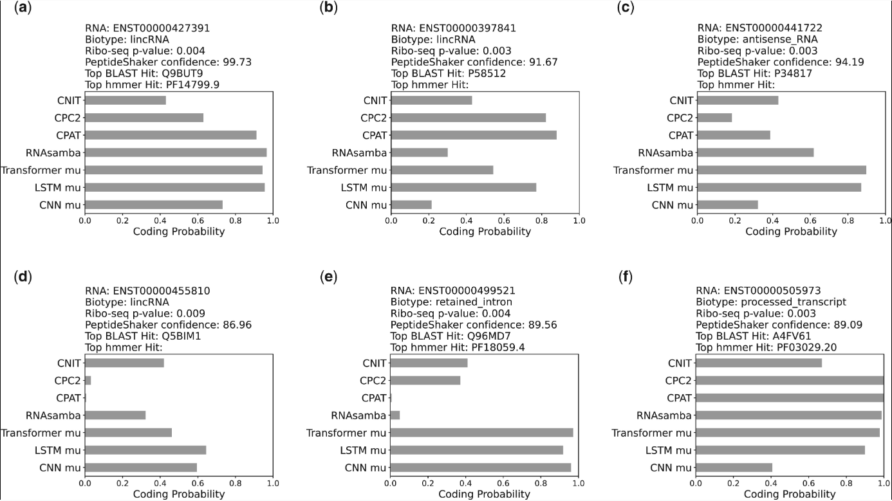
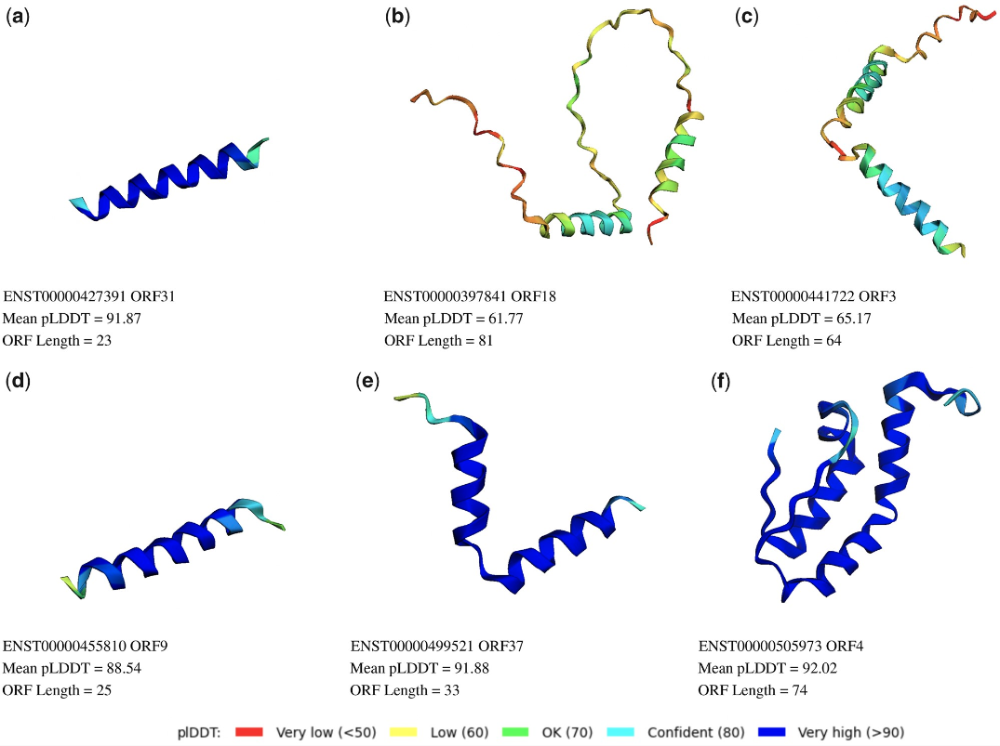

Identifying misannotated lncRNAs
The aim of this overview is to explain this work as simply as possible.
For more biological and technical details, check out the paper in Bioinformatics!
Alright! What’s the problem we’re looking at?
- Long non-coding RNAs (lncRNAs) are defined as non-coding (i.e. don’t code for proteins) RNAs greater than 200 nucleotides in length.
- However, recently it was discovered that some open-reading frames within lncRNAs can be translated into small proteins (micropeptides).
- Such lncRNAs are called
misannotated lncRNAsand we want to identify them.
What are the issues with identifying these misannotated lncRNAs?
- Experimental methods:
- Expensive!
- Time-consuming!
- Cell specific. Need to do a very comprehensive search!
- Differences across species?
- Computational methods:
- Coding/Non-Coding classifiers: Normal prediction methods are hamstrung because we don’t know which lncRNAs are misannotated i.e. training datasets have wrong labels.
So there are 2 main problems: * A method able to identify misannotated lncRNAs by sequence alone would be amazing! * It would save time, experimental costs, while being independent of cell-type and species. * If we could generate a list of possible candidate misannotated lncRNAs, experimental validation would be a lot more directed. * Current labels of lncRNAs are wrong. Therefore, a prediction method that doesn’t rely completely on labels would be ideal.
Our method addresses these problems by relying on training dynamics of deep learning methods to solve the problem of identifying misannotated lncRNAs.
So, what are training dynamics?
- Relying on training dynamics of deep learning models means that:
- At the end of every training epoch, we have the model make coding/non-coding predictions for the sequences in our test set. We save these predictions.
- Finally, we take the mean and standard deviation of coding/non-coding predictions over all epochs.
- What we’re looking for is sequences with these 2 characteristics:
- labeled non-coding in the dataset (i.e. ground truth is non-coding)
- consistently classified as coding across epochs.
The following figure demonstrates this idea: * Estimated coding probability across all training epochs shown for five example RNAs for the LSTM model. * We expect coding and non-coding RNAs to have high and low coding probabilities respectively; this is the case for examples A and E. * We are interested in lncRNAs—like B (ENST00000447563)—which have consistently high estimated coding probability, despite having the ground truth-label ‘Non-coding’. * C and D show examples of ambiguous samples, i.e. they show a large change in estimated coding probabilities as model training progresses, so we are not sure whether they are mislabeled or not.

Here’s a training dynamics summary overview plot showing what this looks like for the complete dataset:
- Each blue dot is an RNA with ground truth label coding. The orange dots are RNAs with ground truth label non-coding.
- y-axis is the average of ground-truth label predictions across all epochs.
- x-axis is the standard deviation of the ground-truth label predictions across all epochs.
- lncRNAs in the hard-to-learn region of the following figure are considered candidate misannotated lncRNAs.
- Why?– These samples have a low mean and standard deviation for the predicted probability of the ground-truth (i.e. non-coding) class overall training epochs.
- In other words, RNAs that fall in this region are consistently classified into the non-ground-truth (i.e. coding) class.

Uh, does this training dynamics stuff really work when a large number of sequences might be mislabelled?
Yes it does!
We designed a computational experiment where we intentionally mislabel (i.e. flip ground-truth labels of coding to non-coding and vice versa) a part of the dataset.
After flipping the labels, we retrain the model and examine the training dynamics again.
Here’s what it looks like:
- We sampled 5% of the data with mean (ground truth) >= 0.8 and std (ground truth) <= 0.2.
- These are samples for which we have medium-high confidence that the ground truth labels are correct (before).
- After we flip the labels (coding RNAs become non-coding RNAs and vice-versa), the samples move into the hard-to-classify region of the training dynamics summary plot.

Ok, so this computational method works. But how well do the results agree with exisiting experimental results?
We complied data from 4 experimental sources and found a statistically significant overlap in all cases: 1. cncRNAdb—a manually curated resource of experimentally verified coding ncRNAs 2. Ribo-Seq data-based methods used to find misannotated lncRNAs: 1. FLOSS 2. ORFScore 3. PhyloP


Hmm, this is useful! What’s the best way to use this data?
The best way to find a really high-confidence candidate misannotated lncRNA (e.g. for experimental validation) is to aggregate data from many sources!
To demonstrate how, we compiled 6 other types of data for a few misannotated lncRNAs we identified: 1. Ribo-Seq identifies RNAs associated with ribosomes, which are likely to be translated. Ribo-Seq P-values (a combined score from FLOSS, ORFScore and PhyloP) show the likelihood of the identified RNA being a true-positive. 2. PeptideShaker analyzes publicly available mass-spectrometry data and provides a confidence score for each peptide. 3. The Top BLAST Hit is the top hit from running the query in BLASTx. 4. The Top hmmer Hit is the hmmer hit with the most significant E-value obtained by running hmmscan on the Pfam profile database that looks for known domains. 5. CNIT, CPC2, CPAT and RNASamba are tools for the coding potential prediction of a given RNA.

- Alphafold2 provides folding predictions and confidence for given ORFs.

And that’s a wrap!
For more nitty-gritty details, checkout the Bioinformatics paper!